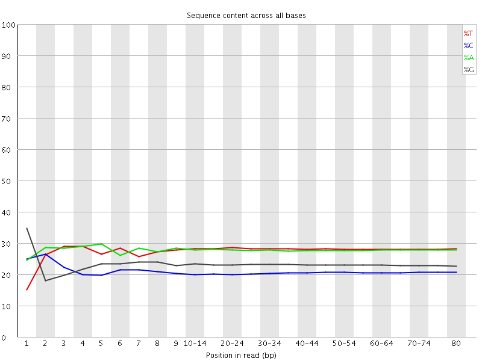

![[OK]](Icons/tick.png) Basic Statistics
Basic Statistics
| Measure | Value |
|---|---|
| Filename | RA031_R1.fq.gz |
| File type | Conventional base calls |
| Encoding | Sanger / Illumina 1.9 |
| Total Sequences | 7540319 |
| Filtered Sequences | 0 |
| Sequence length | 80 |
| %GC | 44 |
Per base sequence quality
Per sequence quality scores
![[WARN]](Icons/warning.png) Per base sequence content
Per base sequence content

![[FAIL]](Icons/error.png) Per base GC content
Per base GC content
Per sequence GC content
Per base N content

Sequence Length Distribution

Sequence Duplication Levels
Overrepresented sequences
| Sequence | Count | Percentage | Possible Source |
|---|---|---|---|
| GGGGGGGGGGGGGGGGGGGGGGGGGGGGGGGGGGGGGGGGGGGGGGGGGG | 131902 | 1.7492893868283292 | No Hit |
| AGGGGGGGGGGGGGGGGGGGGGGGGGGGGGGGGGGGGGGGGGGGGGGGGG | 9140 | 0.1212150308229665 | No Hit |
Kmer Content
| Sequence | Count | Obs/Exp Overall | Obs/Exp Max | Max Obs/Exp Position |
|---|---|---|---|---|
| GGGGG | 14418960 | 37.009594 | 44.09977 | 6 |
| CCCTC | 2572525 | 8.60843 | 11.020549 | 60-64 |
| CCTCA | 2936845 | 7.3099856 | 20.176182 | 1 |
| CTCAG | 3097225 | 6.8830757 | 18.333342 | 2 |
| CTGAG | 3286105 | 6.52027 | 11.196429 | 2 |
| TCAGC | 2894980 | 6.4336195 | 17.333645 | 3 |
| TCCCT | 2530370 | 6.263309 | 7.9754844 | 55-59 |
| GCTGA | 3134835 | 6.220121 | 11.126794 | 1 |
| GAGGG | 2792820 | 5.972005 | 10.693353 | 4 |
| ATCCC | 2330405 | 5.8005195 | 9.909367 | 9 |
| CAGCT | 2597975 | 5.773574 | 7.536769 | 50-54 |
| AGCTG | 2893135 | 5.7405405 | 6.864965 | 45-49 |
| TGAGG | 3083560 | 5.4627447 | 9.261661 | 3 |
| AGGGA | 2839110 | 5.057738 | 9.078484 | 5 |
| GATCC | 2210085 | 4.9115524 | 8.492073 | 8 |
| GGATC | 2239450 | 4.443503 | 7.592627 | 7 |
| GGGAT | 2500095 | 4.429095 | 7.085885 | 6 |
| AAAAA | 3812025 | 3.9266348 | 4.2923093 | 75-76 |
| TTTTT | 3890350 | 3.8974004 | 5.0452237 | 3 |
| CCCAG | 965220 | 2.8998837 | 5.3495765 | 1 |
| CAGCC | 878855 | 2.640411 | 11.834229 | 3 |
| GCCTC | 753520 | 2.2513003 | 5.723975 | 1 |
| GCCTG | 720130 | 1.9209844 | 5.469347 | 1 |
| AGCCC | 514730 | 1.5464425 | 9.229763 | 4 |
| GCCCT | 485885 | 1.4516842 | 8.6712265 | 5 |
| CAGCG | 527665 | 1.415425 | 11.032794 | 4 |
| CGCTG | 504035 | 1.3445396 | 10.74664 | 7 |
| AGCGC | 476440 | 1.2780175 | 10.734219 | 5 |
| GCGCT | 466190 | 1.2435862 | 10.629077 | 6 |
| AGGGG | 474815 | 1.015317 | 6.0374427 | 1 |